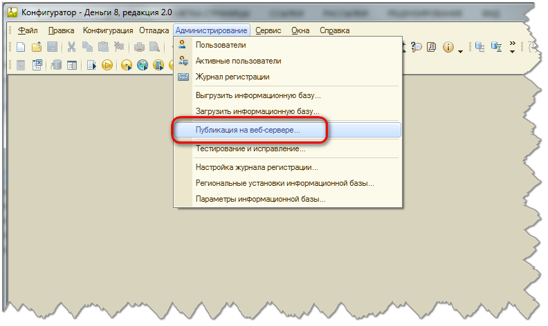
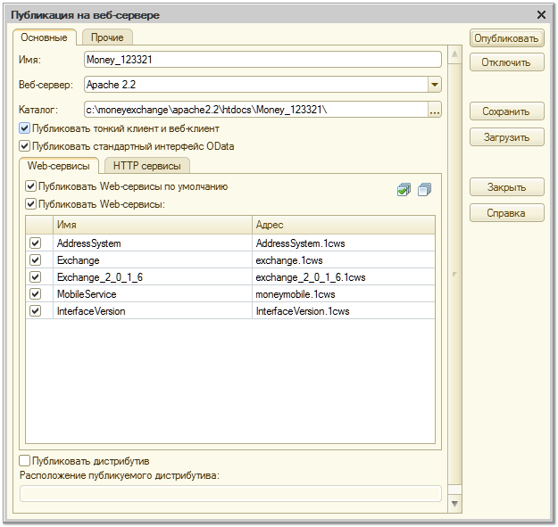

В некоторых случаях программа не может опубликовать информационную базу автоматически, это может быть связано с ограничениями доступа в операционной системе или с настройками веб-сервера. В таких случаях выполнить публикацию информационной базы можно самостоятельно.
Откройте информационную базу в режиме конфигуратора. В меню «Администрирование» выберите команду «Публикация на веб-сервере…»

В диалоге публикации задайте имя базы данных латинскими буквами, без пробелов и знаков препинания. Имя базы можно переписать из настроек синхронизации. Выберите установленный веб-сервер и задайте каталог, в котором будут храниться файлы публикации. В случае использования веб-сервера Apache имя каталога должно состоять только из символов латинского алфавита.

Обратите внимание: к указанному каталогу должны иметь доступ Вы и пользователь, от имени которого запускается веб-сервер.
Отметьте флажками пункт «Публиковать Web-сервисы» и все веб-сервисы в списке. После этого нажмите на кнопку «Опубликовать» и дождитесь сообщения программы о публикации информационной базы. В некоторых случаях программа может предложить перезапустить веб-сервер – это требуется для того, чтобы изменения на веб-сервере вступили в действие.